Plot IDM Cut Scores and Fitted Rating Functions
plotCutsIDM.RdShows how item ratings relate to item difficulty, and where the resulting
cut scores lie. Pass the result of computeCutsIDM,
computeCutsIDMMAPT, or computeCutsIDMOrdinal
directly to this function.
Each rater gets a separate panel. show_aggregate = TRUE adds a
summary panel: mean cuts for moving-average IDM, or a jointly fitted
Pooled (MAPT) model for MAPT, or Reference (ordinal) curves
with both random intercepts set to zero for ordinal models.
The y-axis depends on the method: rating levels for moving-average IDM, probabilities from zero to one for MAPT and ordinal models. Optional plausible values (PVs) add population distributions in the background and percentage tables above the panels. The background height is scaled for display; read population shares from the percentage tables, not from that height.
Usage
plotCutsIDM(
res_list,
est_col = NULL,
show_raw = TRUE,
show_smoothed = TRUE,
show_residuals = FALSE,
show_aggregate = FALSE,
show_aggregate_labels = TRUE,
show_cut_values = TRUE,
show_item_numbers = TRUE,
cut_value_digits = 0L,
item_number_size = 2,
cut_value_size = 2.6,
aggregate_label_size = 3,
pv_data = NULL,
pv_cols = NULL,
respondent_id_col = NULL,
pv_id_col = NULL,
pv_value_col = NULL,
weight_col = NULL,
input_format = c("auto", "long", "wide"),
pv_missing = c("error", "drop"),
density_bw = NULL,
density_adjust = 1,
population_height = 0.25,
population_fill = "grey50",
population_alpha = 0.15,
population_col = NULL,
population_colors = NULL,
show_percentages = TRUE,
percentage_digits = 1L,
percentage_size = 3,
show_population_stats = TRUE,
population_stats_digits = 2L,
show_caption = FALSE
)Arguments
- res_list
A result from
computeCutsIDM(),computeCutsIDMMAPT(), orcomputeCutsIDMOrdinal(). The result's class selects the appropriate view.- est_col
Optional character scalar. Label to use for the item difficulty axis. If
NULL, the value stored inres_listis used.- show_raw
Logical scalar. For moving-average IDM, shows raw ratings as points and a thin line connecting items ordered by difficulty. For MAPT and ordinal models, shows the empirical proportion of ratings above each boundary at each observed difficulty, within the relevant rater or pooled panel. MAPT points have the color of their boundary, matching its curve and cut line; see the worked example below.
FALSEhides points but keeps the fitted probability curves. Ordinal points are also empirical proportions, whereas the displayed curves set item effects to zero.- show_smoothed
Logical scalar. Shows the non-monotonized moving average as a thin dashed blue line. Has no effect for MAPT or ordinal results, whose logistic curves are always shown.
- show_residuals
Logical scalar. Adds a residual row. For moving-average IDM, residuals are raw ratings minus smoothed moving averages. For MAPT, they are empirical proportions above each boundary minus the corresponding model probabilities at the same difficulties. For ordinal models, they are empirical proportions minus the displayed reference or conditional rater curves, with item effects set to zero; they are not residuals from the fully conditional model.
- show_aggregate
Logical scalar. Adds a
Meanpanel for moving-average IDM, overlaying the monotonized rater curves and their mean cuts. For MAPT, adds aPooled (MAPT)panel with the jointly fitted logistic curves and pooled cuts fromres_list$cuts_summary. This is not a mean of the rater-specific cuts. If the MAPT result was computed withper_rater = FALSE, only the pooled panel is shown regardless of this option. For ordinal results, addsReference (ordinal)curves and cuts with both random intercepts zero. Withper_rater = FALSE, only this reference panel is shown regardless of this option.- show_aggregate_labels
Logical scalar. Shows rater names near the right-hand end of monotonized curves in the
Meanpanel. Only used for moving-average IDM whenshow_aggregate = TRUE; has no effect for MAPT or ordinal results.- show_cut_values
Logical scalar. If
TRUE, numeric cut values are shown next to the vertical cut lines in individual panels and, when requested, in the aggregate panel.- show_item_numbers
Logical scalar. Shows item position numbers next to raw grey points in the individual moving-average IDM panels. Only used when
show_raw = TRUE; has no effect for MAPT or ordinal results.- cut_value_digits
Non-negative integer scalar. Number of digits after the decimal point used for rounding cut value labels. The default
0Lshows rounded whole-number cut values.- item_number_size
Finite non-negative numeric scalar. Text size in millimetres for item position numbers next to raw points. Default is
2. Only used for moving-average IDM whenshow_raw = TRUEandshow_item_numbers = TRUE.- cut_value_size
Finite non-negative numeric scalar. Text size in millimetres for numeric cut value labels in individual and aggregate panels. Default is
2.6. Only used whenshow_cut_values = TRUE.- aggregate_label_size
Finite non-negative numeric scalar. Text size in millimetres for rater names in the aggregate panel. Default is
3. Only used for moving-average IDM whenshow_aggregate = TRUEandshow_aggregate_labels = TRUE.- pv_data
Optional wide- or long-format data frame of plausible values for one domain, optionally grouped into populations by
population_col, already on the same metric as the item estimates and cuts. Supplying it adds background silhouettes to rating or MAPT probability panels. DefaultNULLleaves the plot unchanged. Silhouettes show distribution shape only; their height does not represent rating stages, rating probabilities, or density-axis values.- pv_cols
Character vector of PV column names, required for wide input. Wide input has one row per respondent. Other numeric columns are never selected automatically.
- respondent_id_col
Optional respondent ID column, unique within each population for wide input; required for long input. IDs may repeat between populations. These are population respondent IDs, not rater IDs.
- pv_id_col
PV identifier column for long input. Required together with
pv_value_colandrespondent_id_col. Each respondent-PV combination must be unique within its population.- pv_value_col
Numeric PV value column for long input.
- weight_col
Optional sampling-weight column in
pv_data. These weights affect population distributions, percentages, M, and SD. They do not change the rating models or cuts already stored inres_list. DefaultNULLuses equal weights. Weights must be finite, non-missing, non-negative, and constant across PVs for each respondent within its population. Zero-weight observations are excluded.- input_format
PV input layout.
"auto"selects long format whenpv_id_colorpv_value_colis supplied, and wide format otherwise.- pv_missing
Default
"error"rejects missing PVs and omitted respondent-PV rows."drop"omits them with a warning and renormalizes weights within each PV. Infinite PVs and invalid weights always cause an error. Every PV must retain at least two observed respondents with positive weights.- density_bw
Optional positive finite bandwidth in score units. Default
NULLaverages unweightedstats::bw.nrd0()bandwidths across PVs within each population, then averages those population means. All populations and PVs share this bandwidth. Sampling weights affect the density estimates, not automatic bandwidth selection.- density_adjust
Positive finite multiplier for the common density bandwidth. Default
1.- population_height
Finite fraction between zero and one of the rating- or probability-axis range occupied by the highest silhouette peak across all populations. Default
0.25. All silhouettes use the same height factor. This is a display setting for distribution shape only; silhouette height does not represent rating stages, rating probabilities, or density-axis values.- population_fill
Character vector of silhouette fill colors. An explicitly supplied single color applies to all populations. Otherwise supply exactly one color per observed population, in order of first appearance in the data (the population legend order); vector names are ignored. Too few or too many colors, including an empty vector, trigger a warning and restore the default colors. If omitted, ungrouped input uses
"grey50"; grouped input uses the automatic palette described underpopulation_colors. Explicitpopulation_colorstakes precedence.- population_alpha
Finite silhouette opacity between zero and one. Default
0.15.- population_col
Optional population grouping column in wide or long PV input. Labels must be non-missing and non-empty. Groups are drawn and listed in their order of first appearance; unused factor levels are ignored. Default
NULLtreats all rows as one population.- population_colors
Optional named character vector with exactly one color per observed population label. Requires
population_coland takes precedence overpopulation_fill. With neither color argument supplied, grouped input uses blue and orange for two groups (blue for one), or a qualitative palette for more groups. A separate population fill legend is added.- show_percentages
Logical scalar. Default
TRUEadds percentage tables to rating panels whenpv_datais supplied, with one colored row per population in legend order. Residual panels have no percentage labels.FALSEhides the tables and their additional caption. Has no plotting effect withoutpv_data.- percentage_digits
Integer scalar from zero to ten. Decimal places in percentage labels. Default
1L. Displayed totals can differ slightly from 100 percent because of rounding.- percentage_size
Finite non-negative percentage-table text size in millimetres. Default
3. Reduce this size or increase figure width for many intervals or small panels.- show_population_stats
Logical scalar. Default
TRUEdisplays M and SD below each population name in the fill legend whenpv_datais supplied. For ungrouped PV input they appear in the subtitle.FALSEhides these statistics and their caption line independently ofshow_percentages. Has no plotting effect withoutpv_data.- population_stats_digits
Integer scalar from zero to ten. Decimal places in displayed M and SD values. Default
2L. Useggplot2::theme()to adjustlegend.textorplot.subtitletext size.- show_caption
Logical scalar. Default
FALSEhides explanatory plot captions. Set toTRUEto explain the population silhouette and, when displayed, percentages and M/SD below the plot. Does not affect statistics, percentage labels, or the subtitle. Has no plotting effect withoutpv_data.
Details
Ordinal models: reference curves and conditional rater curves
Results from computeCutsIDMOrdinal use the same zero-to-one
probability axis as MAPT, with a horizontal line at 0.5. However, all
boundaries and rater effects come from one joint cumulative-logit model.
The Reference (ordinal) panel sets the rater and item random
intercepts to zero. It is not the average of the individual curves and
is not a marginal probability curve integrated over random effects.
Individual panels incorporate the estimated conditional rater intercept and set the item intercept to zero. Their cuts are the 0.5 crossings of these curves. There are no separately fitted rater models. Conditional rater effects are shrunk towards zero; a positive effect shifts curves and cuts towards lower difficulties. If the fitted model has no rater effect, observed raters share the reference curve.
Observed proportions and optional residuals are calculated as in the
MAPT view, but the ordinal curves omit the fitted item intercepts. The
resulting discrepancies can therefore reflect item effects as well as
other lack of fit; they are not fully conditional model residuals.
The model's item effects remain available in res_list$item_effects.
These plotting choices do not refit or remove any effect from the model.
show_aggregate = TRUE adds the reference panel to the individual
panels. With per_rater = FALSE, only the reference panel appears.
Population silhouettes, statistics, interval percentages, and
extrapolation markings work as in the MAPT view, using each panel's own
cuts. show_smoothed, show_item_numbers, and
show_aggregate_labels have no effect for ordinal results.
MAPT: read the axes and find a cut
This section applies to a result from computeCutsIDMMAPT().
The horizontal axis shows item difficulty on the original est scale.
The vertical axis shows the probability of a rating above a selected
boundary. For example, 0.75 means a fitted probability of 75 percent for
that rating-level assignment. It is not a student's probability of answering
the item correctly.
Rating labels first receive indices in the order given by rating_levels.
For c("1a", "1b", "2", "3", "4"), those indices are 1, 2, 3, 4, 5.
Thus, a boundary of 3.5 separates labels "2" and "3".
The plotted cut, however, is an item difficulty such as 500; it is not 3.5.
Each boundary has a fitted logistic curve: $$p_k(x)=\frac{1}{1+\exp[-(\alpha_k+\beta_k x)]}.$$ Here, \(k\) identifies the boundary, \(x\) is item difficulty, and \(p_k(x)\) is the fitted probability of a rating above that boundary. The estimated intercept \(\alpha_k\) and slope \(\beta_k\) determine the position and steepness of the curve; \(\exp\) is the exponential function.
To read the cut, find where the colored curve crosses the horizontal
reference at 0.5. The vertical line of the same color marks that difficulty:
$$p_k(c_k)=0.5, \qquad c_k=-\frac{\alpha_k}{\beta_k}.$$
For example, \(\alpha_k=-10\) and
\(\beta_k=0.02\) give a cut of 500.
The displayed number beside the cut line is rounded according to
cut_value_digits; the line uses the unrounded cut.
Solid curves show predictions within the observed difficulty range of the panel. Dotted portions extend beyond that range: they are extrapolations.
MAPT: what the colored points mean
A color identifies a boundary. Points, the fitted curve, and the vertical cut line share that color. The legend shows which boundary each color represents. These colors do not identify individual items or raters, and are separate from the population colors used for PV backgrounds.
For each boundary, each observed rating contributes a zero or a one.
A rating above the boundary contributes 1; a rating below it contributes 0.
For example, a single rating of "2" in the five-level system above
contributes the following four values:
| Boundary between labels | Rating-index boundary | Value for rating "2" |
1a and 1b | 1.5 | 1 |
1b and 2 | 2.5 | 1 |
2 and 3 | 3.5 | 0 |
3 and 4 | 4.5 | 0 |
All four values have the same horizontal position: that item's difficulty. Several colors can therefore overlap at zero or one. Points are partly transparent, so overlapping colors can look like a mixed color. There is no single category color assigned to an item.
When several observations have exactly the same difficulty, the plot shows their mean zero-or-one value for each boundary. This is the observed proportion above that boundary. A point is therefore not always one item. For example, if three of four available ratings are above the boundary, the point is at \(3/4=0.75\), even if the fitted curve is at 0.60.
More formally, let \(A\) identify the panel (one rater, or all raters together). Let \(S_A(x)\) be the set of observed item–rater pairs in that panel with difficulty exactly \(x\), and let \(n_A(x)\) be their number. The point height for boundary \(b_k\) is $$q_{Ak}(x)=\frac{1}{n_A(x)} \sum_{(i,r)\in S_A(x)}\mathbf{1}(R_{ir}>b_k).$$ Here, \(i\) identifies an item, \(r\) a rater, and \(R_{ir}\) is the rating index. The indicator \(\mathbf{1}(\cdot)\) is 1 when its condition is true and 0 otherwise. Missing ratings are not counted. Different items with identical difficulties are combined in the same point; difficulties are not rounded or grouped into wider bins. Point size is constant and does not show how many ratings were combined. The models were fitted to the original rating observations, so a difficulty with more available ratings contributes more observations to the fit.
An individual rater panel uses only that rater's observations. The pooled panel counts all available observations at each difficulty together. It does not first average each rater's proportion and then average those proportions. For example, one rater contributing 1 upper-side rating out of 1 and another contributing 1 out of 3 give a pooled point at \((1+1)/(1+3)=0.5\).
Use show_raw = FALSE to hide the points when they obscure the curves.
This changes the display only.
MAPT: individual panels, pooled panel, and residuals
Each individual panel uses that rater's fitted models and the cuts in
cuts_per_person. With show_aggregate = TRUE, the additional
Pooled (MAPT) panel uses the models jointly fitted to all ratings and
the cuts in cuts_summary. A joint fit is not an average of the
individual curves or cuts. cuts_summary_per_person, the optional
mean of rater cuts, is not used in this plot. If the result was computed
with per_rater = FALSE, the plot contains only the pooled panel,
regardless of show_aggregate.
With show_residuals = TRUE, an additional row shows the differences
between the observed proportions and the fitted probabilities:
$$e_{Ak}(x)=q_{Ak}(x)-p_{Ak}(x).$$
Here, \(A\), \(k\), and \(x\) identify the panel, boundary, and
difficulty as above; \(p_{Ak}(x)\) is the probability from that panel's
model and \(q_{Ak}(x)\) is its observed proportion. For example,
\(0.75-0.60=0.15\). A positive residual means more ratings were on the
upper side than the model predicted; a negative residual means fewer.
Residuals are shown as vertical segments starting at zero. Cut lines repeat
in the residual panels so their horizontal positions can be compared.
Only models with diagnostic status ok supply curves and residuals.
Unusable fits have no cut line. A panel with no usable cuts remains visible
with an explanatory label. See computeCutsIDMMAPT for the
diagnostic meanings. Predictions use the stored models; for older results
without individual model objects, the same curves are reconstructed from
their diagnostic slopes and cuts. Plotting does not fit new models.
show_smoothed, show_item_numbers, and
show_aggregate_labels apply only to moving-average IDM. They have
no effect on MAPT plots; MAPT logistic curves are always shown.
Moving-average IDM: rating levels rather than probabilities
This section applies only to results from computeCutsIDM().
The y-axis shows rating levels. Grey points and a thin grey line show the original ratings, ordered by item difficulty. The dashed blue line shows a moving average, which smooths local variation. The red line shows the final isotonic curve: a version of the smoothed ratings that cannot decrease as difficulty increases. If the smoothed ratings are already non-decreasing, the blue and red lines coincide.
Horizontal lines mark rating boundaries. The vertical cut lines mark where
the final red curve crosses those boundaries. The stored cuts use linear
interpolation between neighboring points when needed. Use show_raw
to control the grey points and line, and show_smoothed to control the
blue line. The final red curve is always shown.
By default, the vertical cut lines are labelled with their numeric difficulty-scale values rounded to whole numbers. The number of digits after the decimal point can be changed with cut_value_digits. The grey raw-rating points in the individual rater panels are labelled with small item position numbers. These labels can be hidden with show_cut_values = FALSE and show_item_numbers = FALSE.
Technically, the plot is constructed from res_list$plot_data. For each rater facet, the x-axis is the item difficulty column stored as est; the y-values are the raw rating stage stage_raw, the smoothed moving average stage_sm, and the monotonized isotonic fit stage_iso. Horizontal lines are drawn at res_list$boundaries. Vertical lines are drawn at the difficulty-scale cuts in res_list$cuts_per_person; therefore the plotted cut positions are on the same x-axis scale as the item difficulties. Interpolated item positions, if needed for tabular summaries, are stored separately in res_list$cut_positions_per_person.
With show_aggregate = TRUE, the plot adds an aggregate panel labelled Mean. This panel overlays the monotonized rater curves from the individual panels as thin colored lines and draws vertical lines at the mean difficulty-scale cuts in res_list$cuts_summary. With show_aggregate_labels = TRUE, the colored curves are labelled by rater name near their right-hand end. Label positions are adjusted vertically when several rater curves end at similar values. These mean cuts correspond to the cut scores reported by summary(res_list). The color legend is reserved for cut score labels; aggregate rater colors are not added to the legend.
With show_residuals = TRUE, the plot uses an additional row of facets. The residual in item \(i\) is \(e_i = r_i - z_i\), where \(r_i\) is the raw rating and \(z_i\) is the smoothed moving average. Residuals are drawn as vertical segments from zero to \(e_i\). The cut lines are repeated in the residual panel so that large local deviations can be inspected relative to the final cut locations.
If computeCutsIDM() stored ordinal rating labels in res_list, these labels are used on the y-axis.
Both methods: population backgrounds and their colors
Plausible values (PVs) are multiple draws of respondents' proficiency values. They describe a population of respondents, whereas the MAPT curves describe raters' level assignments to items. These are different sources of information. The PVs must already use the same score scale as the item difficulties and cuts.
With pv_data, a population silhouette (a filled distribution shape)
is drawn behind the curves and cut lines in every individual and aggregate
main panel. It shows
distribution shape only: its height is scaled for display and
does not represent rating stages, rating probabilities, or density-axis values. An optional
plot caption states this distinction when show_caption = TRUE; captions
are hidden by default. The rating axis, curves, and cut calculations are unchanged; residual
panels have no silhouette. The shared x-range expands to include the population
density grid, so item curves may occupy a smaller portion of the plot.
The silhouette starts at the lower limit of the main y-axis: zero for MAPT.
Its highest peak occupies population_height times that axis range.
For MAPT, population_height = 0.5 places the highest peak at 0.5;
this does not mean a 50-percent probability or population share.
The same silhouette and scaling are used in every main panel.
Gaussian densities are estimated separately for
each PV using normalized sampling weights and then averaged on a common grid
with a common bandwidth. Respondents' PVs are not averaged first. Population
arguments are used only when pv_data is supplied.
With population_col, several silhouettes overlap transparently behind the
same cuts and rater curves. Each population's density is computed and normalized
separately using its own PVs and weights. All populations share one bandwidth
and grid; weights and missing-data checks are handled within populations.
Silhouettes are not stacked or separately stretched to equal peak heights.
Instead, the largest density peak across all populations determines one shared
display scaling factor, preserving relative differences in concentration.
The fill legend identifies these populations; the cut-color legend identifies
rating boundaries. Their colors have separate meanings.
Background height shows distribution shape only and does not
represent rating stages, rating probabilities, or density-axis values. Every main and aggregate
panel repeats all populations with the same scaling; residual panels stay clear.
Both methods: what the percentage tables measure
The percentage tables estimate how much of each respondent population falls between the cuts. This is different from the MAPT y-axis probability of a rating above a boundary. A population percentage is calculated from PVs and sampling weights, not from the height of a logistic curve.
For one population, the percentage in a score interval \(C\) is
$$S(C)=\frac{100}{M}\sum_{m=1}^{M}
\frac{\sum_{j\in J_m} w_j\,\mathbf{1}(v_{jm}\in C)}
{\sum_{j\in J_m} w_j}.$$
Here, \(M\) is the number of PVs and \(m\) identifies one PV.
\(j\) identifies a respondent, \(v_{jm}\) is their value for PV \(m\),
and \(w_j\) is their sampling weight (1 without weight_col).
\(J_m\) contains respondents with an observed value and positive weight
for that PV. The indicator is 1 when the value lies in \(C\), and 0
otherwise. The calculation is repeated separately for each population.
For example, if one interval contains 40 percent of the weighted observations for PV1 and 50 percent for PV2, the displayed estimate is \((40+50)/2=45\) percent. Respondents' PVs are not averaged before assigning them to intervals.
With two cuts \(c_1<c_2\), the three intervals are
$$(-\infty,c_1),\quad[c_1,c_2),\quad[c_2,\infty).$$
For example, with cuts 400 and 500, a score of 500 enters the last interval.
Each individual panel uses its own rater's cuts. The MAPT pooled panel uses
the jointly estimated cuts; the ordinal reference panel uses reference
cuts; the moving-average Mean panel uses mean cuts.
All aggregate panels recalculate percentages at their own cuts,
rather than averaging individual raters' percentages.
By default, each rating panel with population data also contains a percentage table. Percentage labels are centered between the visible cut positions; outer intervals use the midpoint between the outermost cut and the visible panel edge. Crowded labels shift as little as possible, preserving interval order, with thin lines connecting shifted columns to their interval midpoints. Population rows stay horizontally aligned. Placement uses rendered text widths and adapts to resizing, zooming, and reversed score axes. Intervals wholly outside a zoomed view are anchored at its edge, with their percentages unchanged. Each population has a separate row, following the population legend's order and colors. Each table occupies a separate band above the data, with height determined by its text size and number of rows. The data axes are unchanged, and the tables stay clear of rating curves when the figure is resized. Increase figure height for many panels or populations, and figure width for many intervals. Residual panels receive no percentage labels. If the combined label widths exceed the panel width, text and padding are reduced together to fit; increase figure width to retain the requested text size.
Percentages are calculated directly from PVs and sampling weights, separately
for every population and PV, then averaged equally across PVs. Available weights
are normalized within each PV after the selected missing-data handling. Values
exactly on a cut belong to the upper interval. The two outer intervals extend
to infinity, so observations outside the visible x-range are included. Identical
cuts create empty intervals with zero percent. Actual unrounded cuts are used:
cut-label rounding, density smoothing, and population_height do not affect
percentages. A panel with missing or infinite cuts displays an explanatory
message instead of partial percentages and triggers a warning; descending cuts
cause an error when percentages are enabled.
Percentage labels are estimated population shares. Silhouette height
still shows distribution shape only and does not represent rating stages,
rating probabilities, or density-axis values. Set show_caption = TRUE
to include this explanation.
See plotPopulationCutsIDM for the same distribution with a real
density axis, full details of PV processing, and wide- and long-format examples.
Both views are descriptive estimates and do not calculate uncertainty intervals.
If cuts are out of order, use show_percentages = FALSE to inspect the
curves without attempting to calculate population shares.
Both methods: population mean and spread
M is the population mean and SD is the population standard deviation, a measure of spread on the score scale. They describe the respondents, not agreement between raters or the uncertainty of a cut.
With population data, M and SD are shown by default using the same computation
as plotPopulationCutsIDM(): M averages the weighted PV means, and SD is
the square root of the average weighted PV variance, with an \(n/(n-1)\)
correction applied separately within each PV and population. Here, \(n\)
is the number of respondents with an observed value and positive weight for
that PV and population. See its details for the formula and weighting convention.
The statistics describe each whole population on the supplied score metric and
are shared across individual and aggregate panels, including plots with residual panels.
They are independent of cuts, density smoothing, and silhouette height.
Silhouette height still communicates distribution shape only and does
not represent rating stages, rating probabilities, or density-axis values.
Examples
dat <- data.frame(
est = seq(100, 800, by = 100),
Rater1 = c(1, 1, 2, 2, 3, 3, 4, 5),
Rater2 = c(1, 2, 2, 3, 3, 4, 4, 5)
)
res <- computeCutsIDM(dat, boundaries = c(1.5, 2.5, 3.5))
plotCutsIDM(res)
 ## The plotted vertical lines correspond to these difficulty-scale cuts:
res$cuts_per_person
#> # A tibble: 2 × 4
#> person cut12 cut23 cut34
#> <chr> <dbl> <dbl> <dbl>
#> 1 Rater1 250 450 625
#> 2 Rater2 150 350 550
## Hide the auxiliary raw and smoothed functions:
plotCutsIDM(res, show_raw = FALSE, show_smoothed = FALSE)
## The plotted vertical lines correspond to these difficulty-scale cuts:
res$cuts_per_person
#> # A tibble: 2 × 4
#> person cut12 cut23 cut34
#> <chr> <dbl> <dbl> <dbl>
#> 1 Rater1 250 450 625
#> 2 Rater2 150 350 550
## Hide the auxiliary raw and smoothed functions:
plotCutsIDM(res, show_raw = FALSE, show_smoothed = FALSE)
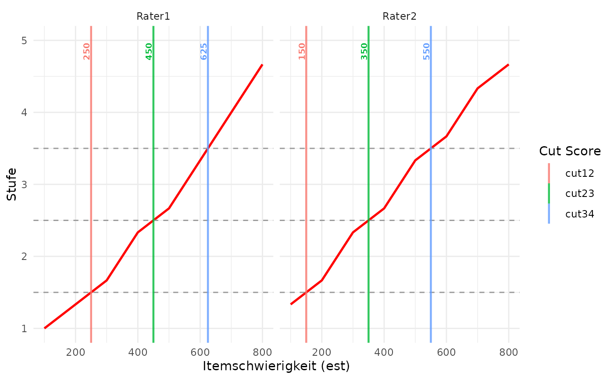
## Add an aggregate panel with all monotonized curves and mean cuts:
plotCutsIDM(res, show_aggregate = TRUE)
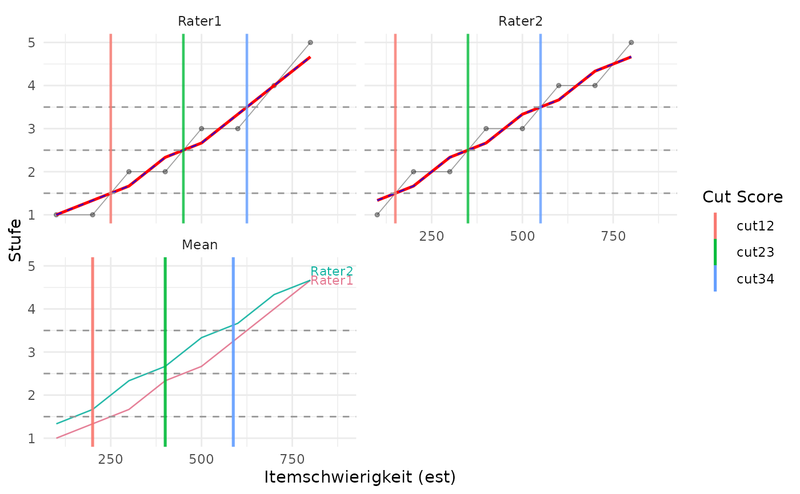
## Hide rater labels in the aggregate panel:
plotCutsIDM(res, show_aggregate = TRUE, show_aggregate_labels = FALSE)
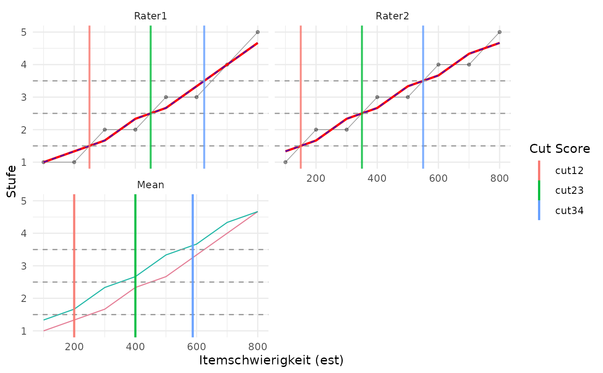
## Hide cut value and item number labels:
plotCutsIDM(res, show_cut_values = FALSE, show_item_numbers = FALSE)
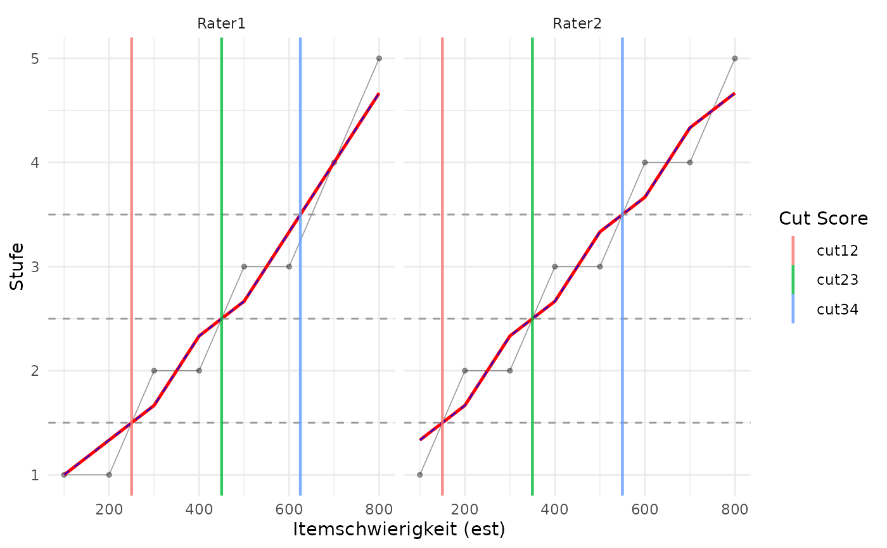
## Show cut value labels with two digits after the decimal point:
plotCutsIDM(res, cut_value_digits = 2)
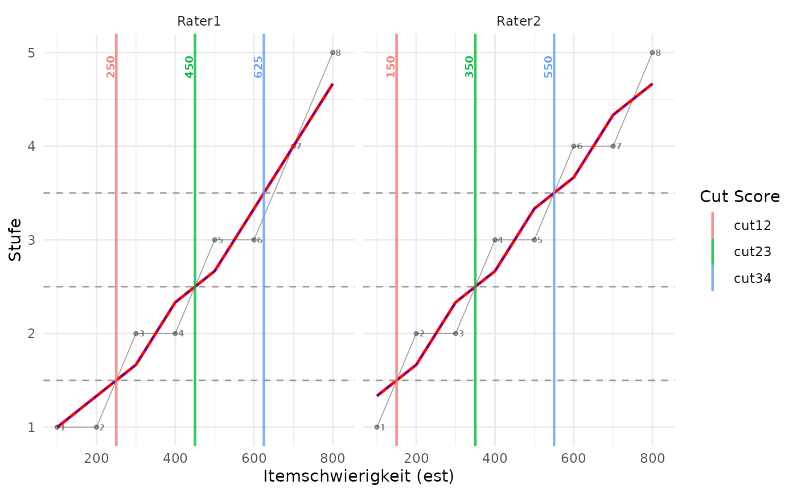
## Add residual panels:
plotCutsIDM(res, show_residuals = TRUE)
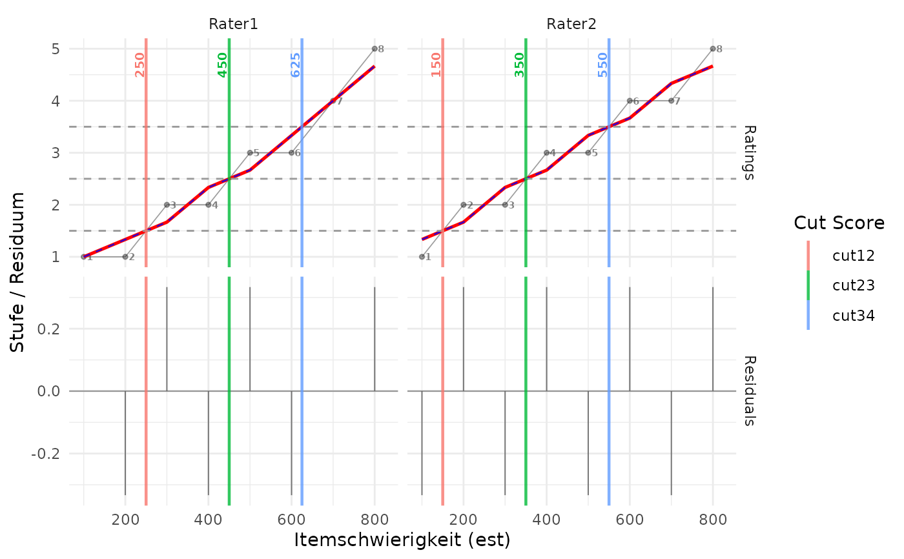
## Enlarge the labels inside the graph:
plotCutsIDM(res, show_aggregate = TRUE,
item_number_size = 3, cut_value_size = 3.5,
aggregate_label_size = 4)
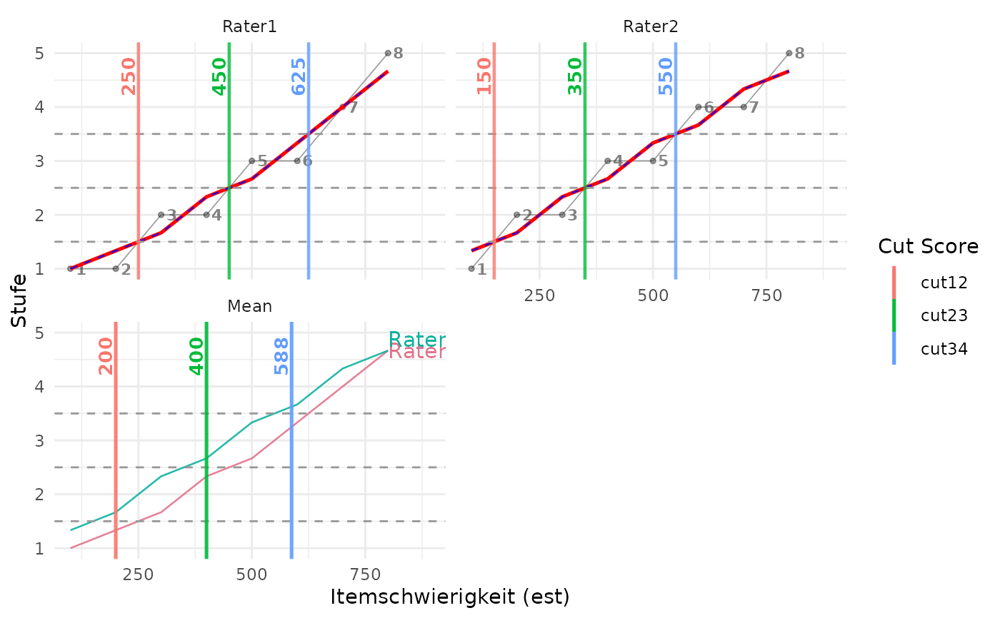
## Synthetic PVs on the item-estimate and cut metric.
set.seed(42)
population <- data.frame(
student = seq_len(200),
PV1 = rnorm(200, 450, 100),
PV2 = rnorm(200, 450, 100),
weight = runif(200, 0.5, 2)
)
## Silhouette = distribution shape only; height does NOT represent rating stages.
## Use show_caption = TRUE to include the silhouette explanation below the plot.
plotCutsIDM(res, pv_data = population, pv_cols = c("PV1", "PV2"),
weight_col = "weight", show_aggregate = TRUE,
population_height = 0.25, population_alpha = 0.15)
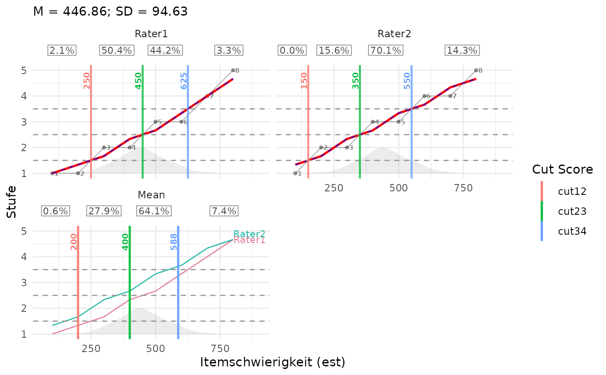
## The same shape-only silhouette stays out of residual panels.
population_long <- tidyr::pivot_longer(
population, cols = c("PV1", "PV2"),
names_to = "pv", values_to = "score"
)
plotCutsIDM(res, pv_data = population_long,
respondent_id_col = "student", pv_id_col = "pv",
pv_value_col = "score", weight_col = "weight",
show_aggregate = TRUE, show_residuals = TRUE)
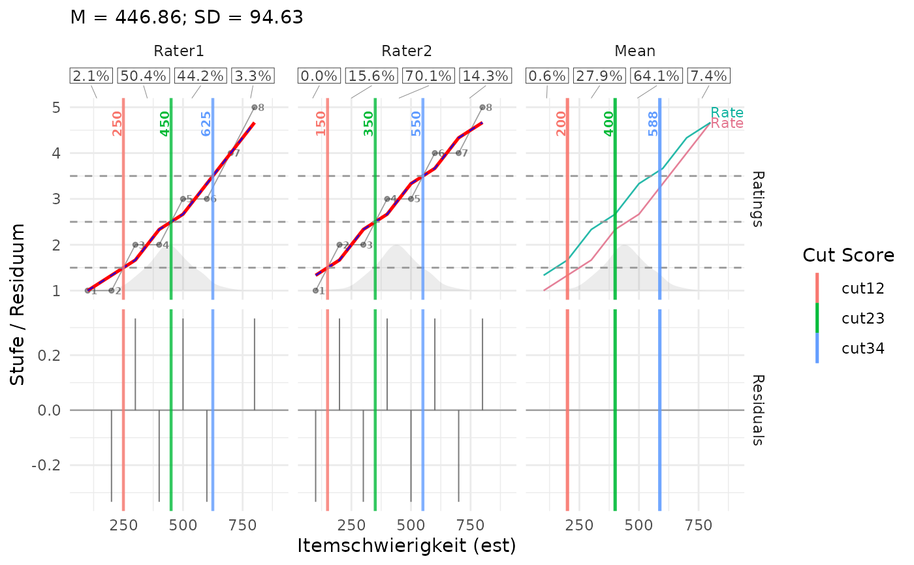
## Use a standalone plot when the density axis is needed.
plotPopulationCutsIDM(res, population, pv_cols = c("PV1", "PV2"),
weight_col = "weight")
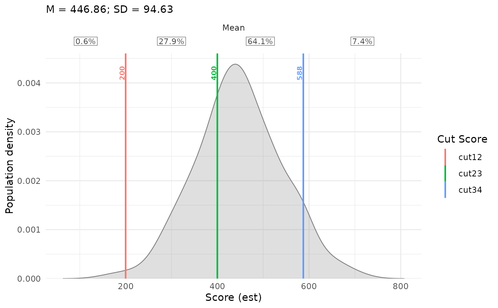
## Two populations with a shared silhouette-height factor, not rating values.
population$group <- "A"
population_b <- population
population_b$group <- "B"
population_b[c("PV1", "PV2")] <- 450 +
1.3 * (population_b[c("PV1", "PV2")] - 450) + 80
populations <- rbind(population, population_b)
plotCutsIDM(res, pv_data = populations, pv_cols = c("PV1", "PV2"),
respondent_id_col = "student", weight_col = "weight",
population_col = "group",
population_colors = c(A = "#0072B2", B = "#E69F00"),
population_alpha = 0.2, show_aggregate = TRUE)
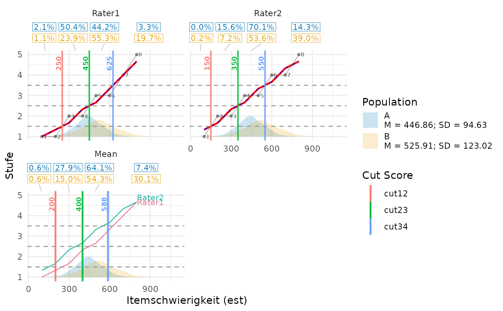
## One explicit fill color applies to all population silhouettes.
plotCutsIDM(res, pv_data = populations, pv_cols = c("PV1", "PV2"),
weight_col = "weight", population_col = "group", population_fill = "grey50")
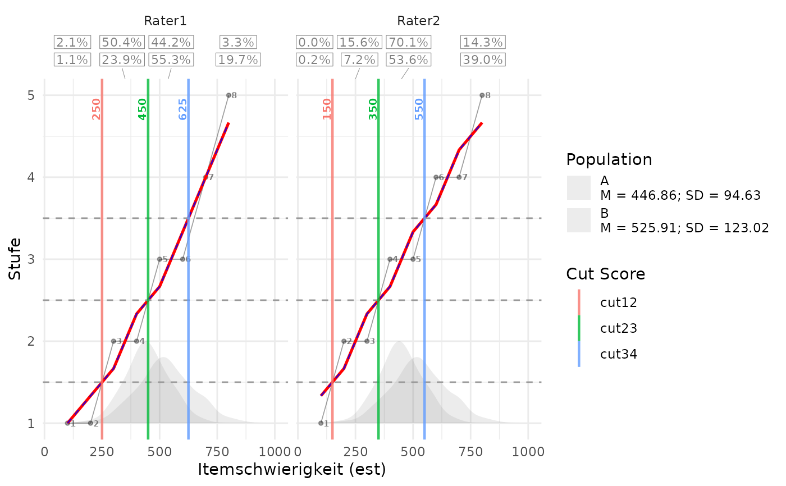
## Or use population_fill = c("#009E73", "#CC79A7") in population legend order.
## Three colors for these two groups would warn and restore the default palette.
## Long input and residuals: silhouettes still show distribution shape only.
populations_long <- tidyr::pivot_longer(
populations, cols = c("PV1", "PV2"), names_to = "pv", values_to = "score"
)
plotCutsIDM(res, pv_data = populations_long, respondent_id_col = "student",
pv_id_col = "pv", pv_value_col = "score", weight_col = "weight",
population_col = "group", show_aggregate = TRUE, show_residuals = TRUE)
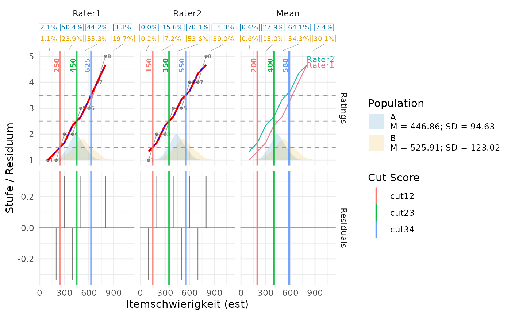
## Percentages are population shares; silhouette heights are display-only.
plotCutsIDM(res, pv_data = populations, pv_cols = c("PV1", "PV2"),
weight_col = "weight", population_col = "group",
show_aggregate = TRUE, percentage_digits = 2, percentage_size = 3.5)
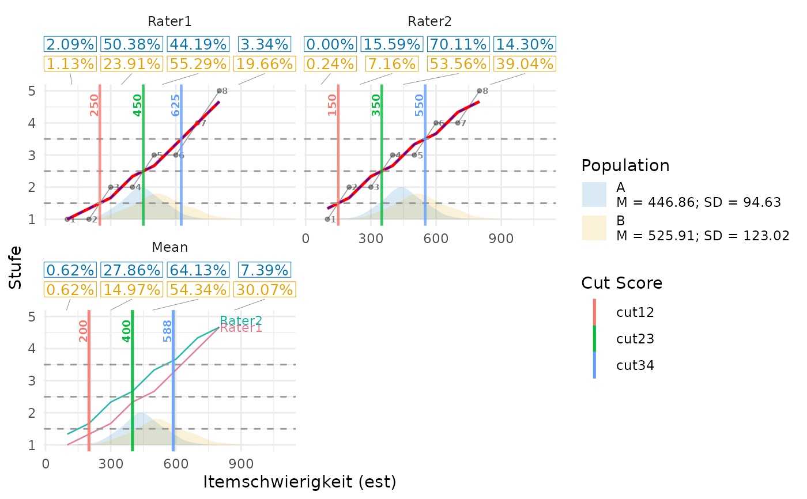
## Keep silhouettes and cut labels, but hide the percentage tables.
plotCutsIDM(res, pv_data = populations, pv_cols = c("PV1", "PV2"),
weight_col = "weight", population_col = "group", show_percentages = FALSE)
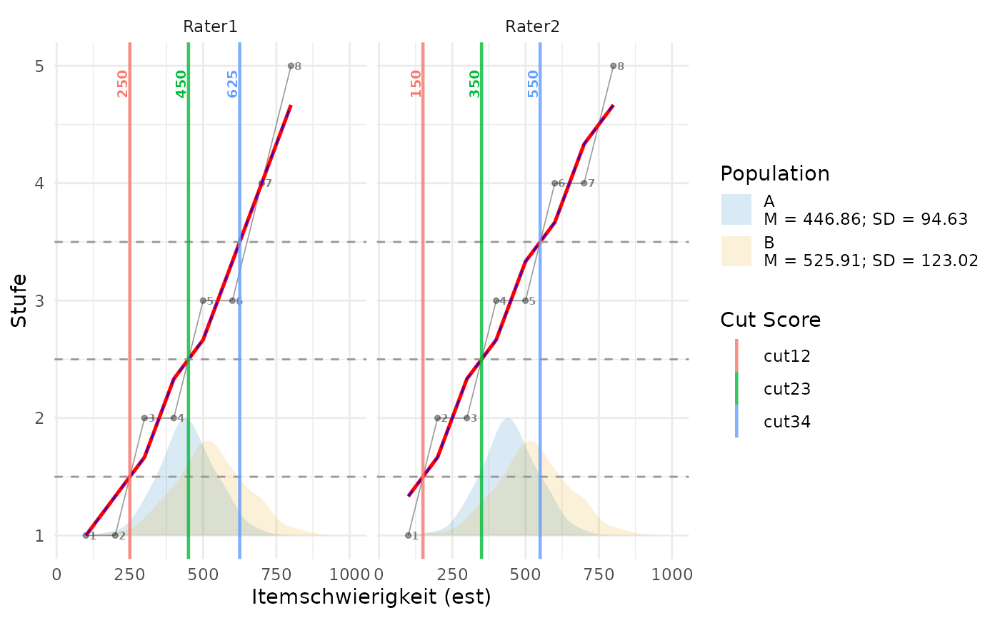
## M and SD use the same population legend as plotPopulationCutsIDM().
plotCutsIDM(res, pv_data = populations, pv_cols = c("PV1", "PV2"),
weight_col = "weight", population_col = "group",
show_residuals = TRUE, population_stats_digits = 1, show_caption = TRUE)
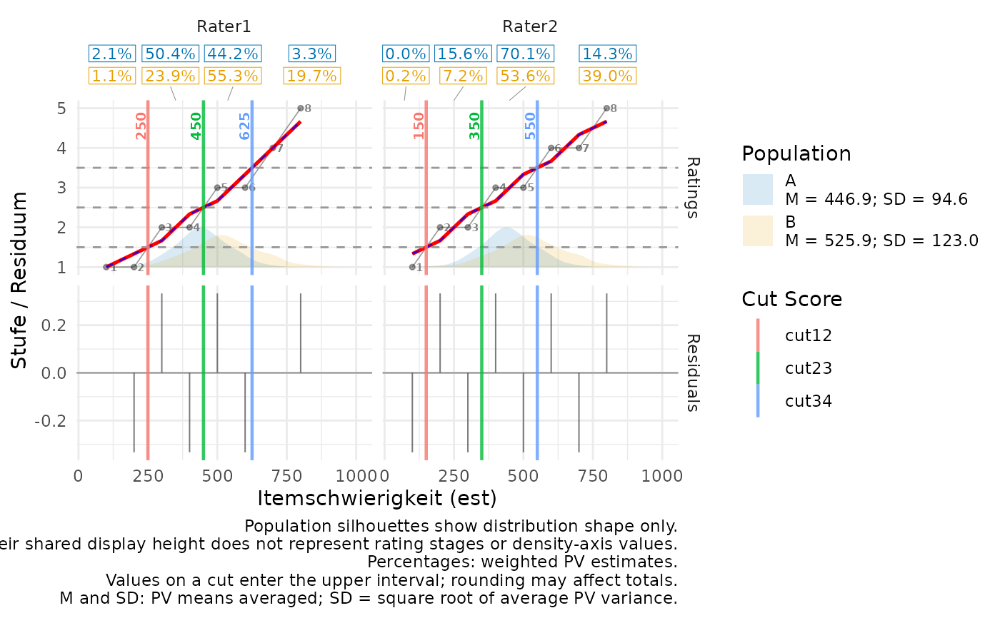
## Hide M and SD independently of interval percentages.
plotCutsIDM(res, pv_data = populations, pv_cols = c("PV1", "PV2"),
weight_col = "weight", population_col = "group", show_population_stats = FALSE)
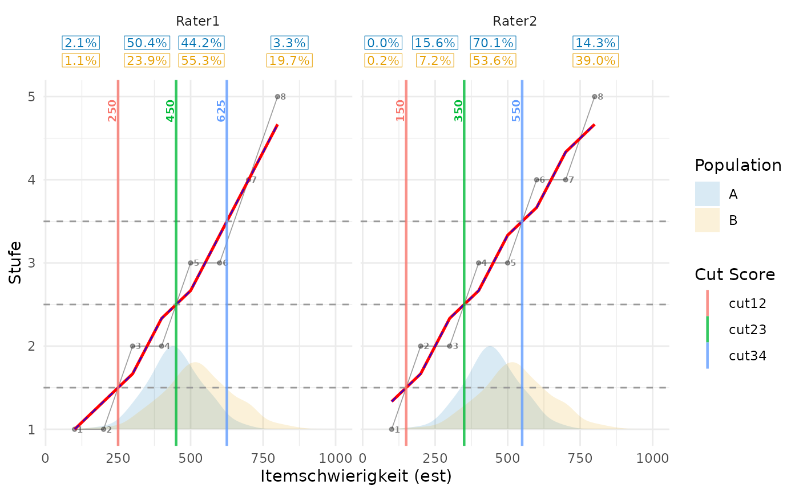
## MAPT logistic curves use a probability axis and cuts at probability 0.5.
## Overlapping ratings avoid perfect separation in this example.
mapt_dat <- data.frame(
est = seq(300, 650, length.out = 15),
Rater1 = c(1, 2, 1, 3, 2, 4, 3, 2, 5, 3, 4, 5, 4, 5, 4),
Rater2 = c(2, 1, 3, 1, 2, 3, 4, 3, 4, 5, 3, 4, 5, 4, 5)
)
mapt <- computeCutsIDMMAPT(mapt_dat)
plotCutsIDM(mapt, show_aggregate = TRUE)
 ## Hide overlapping boundary-colored points; retain curves and cut lines.
plotCutsIDM(mapt, show_aggregate = TRUE, show_raw = FALSE)
## Hide overlapping boundary-colored points; retain curves and cut lines.
plotCutsIDM(mapt, show_aggregate = TRUE, show_raw = FALSE)
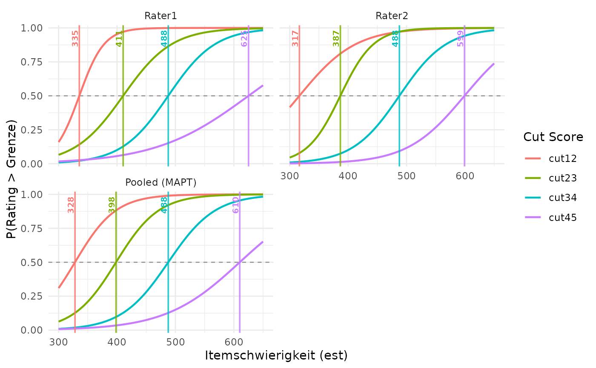
## Use the level names in the cut legend.
level_labels <- c("1a", "1b", "2", "3", "4")
labelled_dat <- mapt_dat
labelled_dat$Rater1 <- level_labels[labelled_dat$Rater1]
labelled_dat$Rater2 <- level_labels[labelled_dat$Rater2]
labelled_mapt <- computeCutsIDMMAPT(labelled_dat, rating_levels = level_labels)
plotCutsIDM(labelled_mapt, show_aggregate = TRUE)
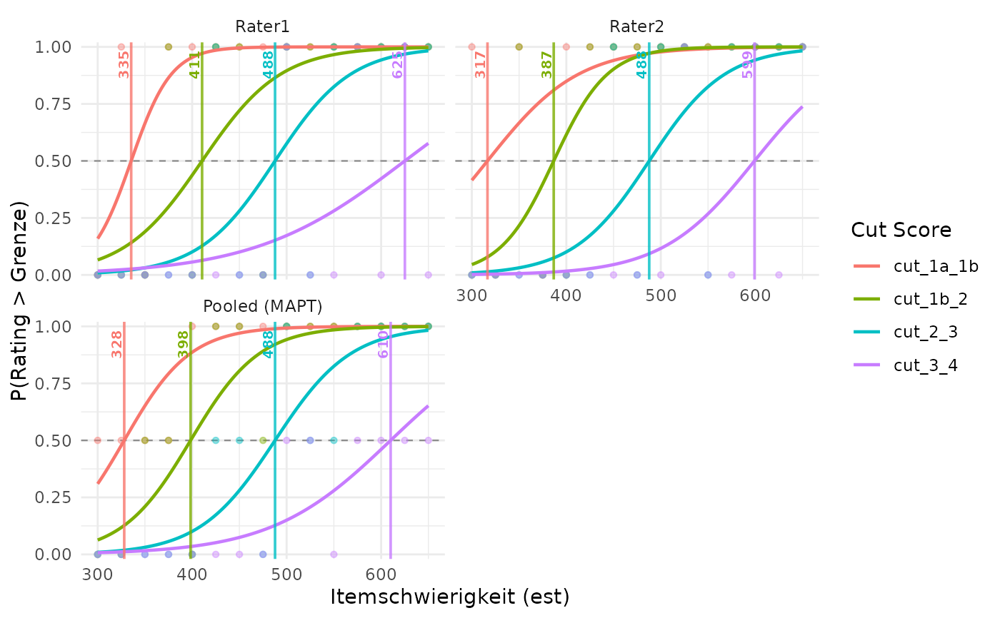
## All rater panels and the pooled panel show both respondent populations.
## The 0.5 background height is a display setting, not a population share.
plotCutsIDM(labelled_mapt, show_aggregate = TRUE,
pv_data = populations, pv_cols = c("PV1", "PV2"),
weight_col = "weight", population_col = "group",
population_height = 0.5, cut_value_size = 4, percentage_size = 4)
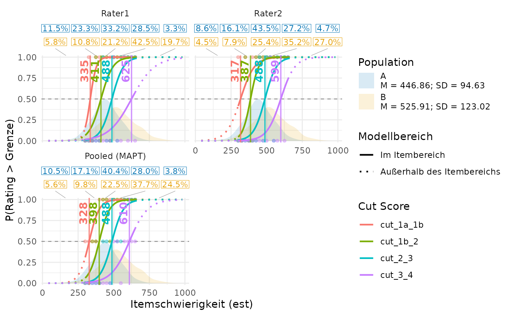
## Pooled curves/cuts are jointly estimated, not averaged across raters.
## PV silhouette height shows distribution shape, not rating probability.
plotCutsIDM(mapt, show_aggregate = TRUE, show_residuals = TRUE,
pv_data = population, pv_cols = c("PV1", "PV2"),
weight_col = "weight")
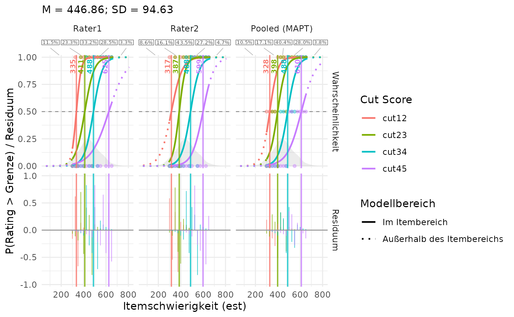
## Without individual models, the plot shows only the pooled panel.
plotCutsIDM(computeCutsIDMMAPT(mapt_dat, per_rater = FALSE))
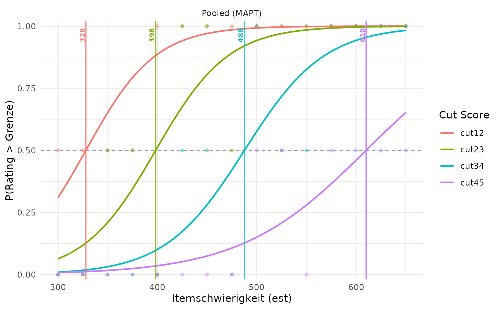